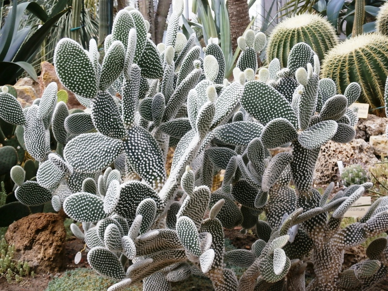

Семейство кактусов
Семейство кактусов очень непохоже на другие растения. Это и привлекло внимание мореплавателей, и первых биологов, ступивших на Американские континенты. У всех видов кактусов, за очень редким исключением, нет листьев, а их роль — то есть фотосинтез, выполняет сочный мясистый суккулентный стебель (sucus — от латинского «сок»).
Семейство кактусов пестрит разнообразием форм и размеров стеблей — цилиндрические, дискообразные, округлые, плоские, маленькие и тонкие, ветвящиеся и стелющиеся по земле, шарообразные и овальные, а также в виде членников.
У многих представителей семейства кактусов можно наблюдать формы стебля с гребенчатыми, или, как говорят, скалистым разрастанием.
Форма и размеры кактусов, выращенных в оранжереях или домах, по сравнению со своими дикими и большими кактусами-братьями, сильно отличаются — у диких кактусов, как правило, мощная, ветвящаяся крона, боковых побегов большое число, и они разрастаются достаточно сильно. В оранжереях же, кактусы либо не имеют боковых побегов вовсе, либо они начинают появляться только в возрасте 20-30 лет..
Семейство Кактусы — это отдельная группа суккулентных растений. Но несмотря на наличие между кактусами и другими суккулентами очень много общих признаков их достаточно просто отличить: итак, главное отличие кактусов — это ареола. Ареола — это уникальное образование, которое представляет из себя видоизмененные пазушные почки, на которых развиваются колючки, побеги, а также цветки кактусов.
Например, у рода кактусов Маммиллярия, место роста ареолы в начальных стадиях развития кактуса делится на две отдельные части: колючки растут на кончике, а в пазухе могут образовываться цветки, и отростки-детки.
Учеными объяснили назначение и происхождение колючек у семейства кактусов. Это измененные почечные чешуйки. Они еще и выполняют функцию сохранения влаги, сокращая испарения, а также могут поглощать влагу из окружающей среды,и ,например, из утреней росы. Для кактусов, чья корневая система плохо развита это почти единственный источник воды.
Ко всему прочему колючки защищают кактус от ультрафиолетового излучения днем, и от перепадов температур в ночное время.
Но помимо воды в жизни кактуса играет ключевую роль освещение. Особенно это касается тех видов, которые произрастают в пустынях, на высокогорьях, где очень сильно ультрафиолетовое излучение солнца. Для того чтобы кактусы развивались правильно, сохраняя правильную форму, естественную окраску, а также сильные и длинные колючки, им необходимо давать очень много света. В летний период пустынные кактусы рекомендуется содержать на открытом воздухе, не давая лишь намокать от дождя.
Небольшой уловкой для поддержания необходимого кактусам освещения может быть использование фитоламп.
Хотя конечно же это не касается эпифитных представителей семейства кактусов — жителей влажных тропических лесов. Например, всем известный «декабрист». Такие кактусы нуждаются в притенении и защите от прямого солнечного света, и значит на улице им делать нечего.